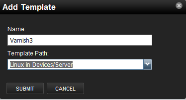
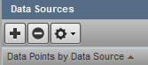
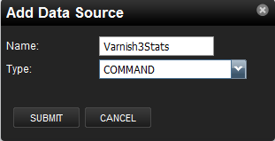

Inspiration
I still consider myself a relative newb with Zenoss as well as Python development. A while back I set out to write a custom ZenPack for use with F5 LTMs. I never would have been able to figure this out without the assistance of a great guide written by Jane Curry. Her outstanding document can be found on the Zenoss community site: docs/DOC-10268
I recently had a need for a ZenPack to interact with a couple of Varnish 3.x servers. I scoured the net of course hoping someone had already done the work for me, but no such luck. I did come across a few solutions for 2.x, but from what I’ve been able to gather the interface to get these stats has changed some (no more fetching stats over the management port). So I set out to write my own.
I of course cracked Jane’s document open, but I quickly realized that it was very SNMP-centric. This was perfect for the F5 pack as the device supports SNMP. However, in this case SNMP is not an option. I’ve done enough research to know that what I wanted to do is a custom Command Parser. The good news is that most of the concepts from Jane’s doc still applied, the bad news is that the mechanics were going to be very different.
I searched around a bit and I was able to find a few other ZenPacks that had taken this approach, but I couldn’t find any “how-to” style documentation. As I mentioned before I don’t consider myself a seasoned Python developer so for me reverse-engineering someone’s else’s ZenPack would be a challenge. There is a small snippet of information in the Zenoss Developer’s Guide, but its far from a walk-through or step-by-step guide like Jane’s document.
So I came to the sad realization that the approach was going to have to be looking at what others had already done. So I figured I should probably document the process and make it available to others in case they find themselves in a similar situation.
Conventions and Assumptions
Throughout this document I hope to link to existing documentation where it exists so for things that are already covered elsewhere I will try and link to them, rather than recreate similar documentation.
Nearly everything done from the command line on a Zenoss server should be done while logged in as the Zenoss user (as opposed to root). Whenever I say as the zenoss userthat means:
ssh root@your_zenoss_server
su - zenoss
When it comes to breaking down code, I’m going to try and display the minimal amount of code to make my point. Some of the files might have alot of extra code that has nothing to do with the effort of writing a command parser. An example of this would be all of the code needed to parse the output of varnishstat. The mechanics of parsing the data and how its laid out is not within the scope of this document. Its more important that we identify how we get to the point of being able to parse the output, as well as how to take the parsed output and use it to graph data. Since all the files we talk about are open source and part of the ZenPack, it would be redundant to fully copy the contents of files into this guide.
Lets Get To It
Create Your Empty ZenPack Shell
Creating an empty ZenPack is covered in numerous locations so I won’t dive into the details here. If you don’t know how to create an empty shell, refer to section 3.2 of the Zenoss Developer’s Guide. Additionally Jane’s Creating Zenoss ZenPacks for Zenoss 3 covers it in section 2.1. In this case we will be creating ZenPacks.community.Varnish3.
Once the empty shell is created, you will certainly want to move it out of the main ZenPack directory and into a seperate folder which we will put under source control. My Zenoss development instance is running on a Virtual Box VM and I store the files in a shared folder. This is personal preference, feel free to put the files anywhere you want, just remember that every time I reference ‘/media/zenpack_git_sources/ZenPacks.community.Varnish3/’ you should replace that with whatever folder you copied your pack out to. Here is what I ran as the zenoss user:
cp -R $ZENHOME/ZenPacks/ZenPacks.community.Varnish3 /media/zenpack_git_sources/ZenPacks.community.Varnish3
zenpack --link --install=/media/zenpack_git_sources/ZenPacks.community.Varnish3
zenoss restart
The full restart is arguably overkill, but I find knowing which situations require restarting which daemons to be inconsistent so while it takes longer, I usually just do a full restart rather than pick and choose which daemons to restart.
Initialize a new GIT Repo in your ZenPack Folder
As Zenoss seems to be making the move to GitHub as outlined in ZenPack Development Processwe are going to cooperate with that effort  The ZenPack Development Processdocument does a good job already of providing both abbreviated as well as in-depth explanation of the process. For me I’ve got the GIT client on my Zenoss VM, rather than my host PC, but since we are using shared folders it should work equally well from either. Here is what I ran as the zenoss user to initialize the new repo:
The ZenPack Development Processdocument does a good job already of providing both abbreviated as well as in-depth explanation of the process. For me I’ve got the GIT client on my Zenoss VM, rather than my host PC, but since we are using shared folders it should work equally well from either. Here is what I ran as the zenoss user to initialize the new repo:
cd /media/zenpack_git_sources/ZenPacks.community.Varnish3
git init
If this is the first time using git under the zenoss user login you need probably need to setup your user name and email:
git config --global user.name "Firstname Lastname"
git config --global user.email "your_email@youremail.com"
Next I grabbed the ‘master’ .gitignore file. Still as the zenoss user:
cd /media/zenpack_git_sources/ZenPacks.community.Varnish3
wget https://raw.github.com/zenoss/Community-ZenPacks-SubModules/master/.gitignore
Additionally I use Eclipse with the pydev module on my PC as my IDE. As a result there are a couple of extra files we will want to add to the .gitignore file. If you use some other IDE (or none at all) you can skip the following lines. Still as the zenoss user:
cd /media/zenpack_git_sources/ZenPacks.community.Varnish3
echo .pydevproject >> .gitignore
echo .project >> .gitignore
Now add everything and do a commit. You should note that this commit does notpush anything up to GitHub, it simply commits the files into your local repo. Once again, run the following as the zenoss user:
git add -A
git status
git commit -m 'Commiting the initial empty shell'
At this point we’ve done the following:
- Created the empty ZenPack shell
- We’ve relocated it outside of Zenoss installation directory
- We’ve initialized a new local GIT repository
- Added a few IDE specific files that should be ignored from source control
- Committed everything.
Now comes the fun part... figuring out how to actually write this crazy thing:)
Identifying The Pieces
Before we get to far, its important to understand what items we want to include in this ZenPack. This is where it starts to get dicey if you don’t know some of the inner workings of Zenoss. I’ll do my best to explain or link to other documentation on each item.
Command Parser
The whole reason for this document...... We’ll be running the varnishstatcommand over SSH and parsing the output to get all the data to graph. The Zenoss Developer’s Guide talks about this in section 12.5.2. Its not very newb friendly so thats where I hope to bridge the gap.
Monitoring Template
Monitoring Templates, also called RRD Templates, are the real meat to getting your performance data displayed. We will be creating one monitoring template. This template will be used to trend various performance metrics.
Building The Pieces
The Command Parser
Lets create the file that will hold our new command parser:
mkdir /media/zenpack_git_sources/ZenPacks.community.Varnish3/ZenPacks/community/Varnish3/parsers
touch /media/zenpack_git_sources/ZenPacks.community.Varnish3/ZenPacks/community/Varnish3/parsers/VarnishStat.py
The contents of my VarnishStat.py contain a good bit more than what I am showing below, however most of the code in that file is used for the actual parsing of the varnishstat output and has nothing to do with creating a command parser. The number of items actually required in the command parser is actually much smaller than I thought would be required when I started out.
First we start with the necessary imports. There is really only one required:
from Products.ZenRRD.CommandParser import CommandParser
Setup logging. This is technically not required, but Python makes logging so easy its really a crime to not use it:
import logginglogger = logging.getLogger('.'.join(['zen', __name__]))
The “logger =” line warrants a little explanation. The Python logging module works some magic with name spaces so an application (in this case ZenCommand) can decide on a logging namespace. In this case Zenoss uses the zen.* name space. This means any loggers we create that start with “zen.” will automatically inherit the logging settings already defined by ZenCommand helping us to ensure a consistent look and feel. The “__name__” piece simply appends the module name onto the logger name. I like to do this so it is crystal clear what module a log entry came from.
Next we need to create our new command parser class as such:
class VarnishStat(CommandParser):
One thing I found the hard way is that it appears Zenoss makes some assumptions that the class name match the module name (including case). So as you can see in this example we’ve created class VarnishStat inside of file VarnishStat.py. Notice the matching names and case. Additionally the class should extend the CommandParser class we imported above.
Now we need to define our single required method:
def processResults(self, cmd, result):
On the surface it looks simple enough, but there is actually alot of magic going on here. First the method has to be called processResults. Additionally it should accept cmd and result as input paramaters. The two input parameters which are passed automatically by ZenCommand when it invokes your processResults method are the keys to success here. I’ll do my best to describe the important parts (that I am aware of).
cmd is an instance of the Products.ZenRRD.zencommand.Cmd object.
cmd.command: This will contain the command line that was executed. This is useful if you have a command line that might change, or if you need to validate that proper flags were used.
cmd.points: This is a list of the datapoints being requested from your monitoring template. This one took me a few minutes to get my head around so I’ll go into a bit of detail. I’ll show you a visual when we talk about the monitoring template, but for now. Assume our monitoring template is named Varnish3 and our datasource is named Varnish3Stats . We will have only one datasource, but we will have multiple datapoints (one for each stat). Lets say we defined two datapoints named cache_hit and cache_miss.
When our processResults is invoked cmd.points will contain two Datapoint objects. If printed they look like: [({}, ‘cache_hit’), ({}, ‘cache_miss’)] Its important to understand that these are Datapoint objects, and not simply strings representing the names of the Datapoints.
cmd.result: Is an object instance which contains additional information about the results of the executed command.
- cmd.result.output: This is the text that was returned from the invoked command. *This is what you want to parse*.
- cmd.result.exitCode: This the return code from the invoked command. There is a good chance you want to levarage this and only attempting parsing on a valid return code.
results is a ParsedResults object which at the time your method is called contains two empty lists: events and values. These will be populated by your processResults method. The results object is discussed a bit in section 12.5.2 of the Zenoss Developer’s Guide
result.events: This is a list which will have the end result of creating events which will show up in the event console. As you may or may not use them, I’m not going to go into alot of detail, but you can see an example usage in the _errors_found method of the VarnishStat parser.
result.values: This is the list you’ll use to return values for each datapoint which will end up in the actual RRD files. This ends up being a list of tuples, where each tuple is a datapoint, value pairing. In this context the datapoint is the actual datapoint object, and not the string representation of the datapoint name. A very contrived example of this would look like:
for dp in cmd.points: result.values.append((dp, 12345))
This example is fairly stupid but it illustrates the concept. If you recall the earlier contents of cmd.points, this would end up assigning the value “12345” to the cache_hit as well as cache_miss datapoints.
In the real world “12345” would be replaced with the value of the actual datapoint and not a static value. You can see this in action toward the tail end of the processResults method in the VarnishStat parser.
So the simpliest, working version of the parser could look like this:
from Products.ZenRRD.CommandParser import CommandParser
class VarnishStat(CommandParser):
def processResults(self, cmd, result):
#Do Some Parsing Code
#....
for dp in cmd.points:
result.values.append((dp, 12345)
Obviously you’ll want to fill in the parsing code section with real code and add error checking, but that minimal amount of code could actually do the trick
The Monitoring Template
At this point we’ve got the bare essentials around the command parser. The second half to making this all work is creating the monitoring template.
Start by logging into your Zenoss server UI and navigate to Monitoring Templates section of the GUI: ‘http://YourServer:8080/zport/dmd/template‘
Next hit the ‘+’ icon in the lower left corner of your screen. This will open the Add Template dialogue box. Give your template a name, I called mine Varnish3. Next decide which device class to target. I’d suggest targeting the highest level device class that the software you are parsing could run on. As an example I’m targeting Varnish3 at /Server/Linux.

Now you have an empty template. Click the ‘+’ icon right under where it says ‘Data Sources’. This is not the same ‘+’ you just clicked. This will open the ‘Add Data Source’ dialogue window.

- First, you need to be certain you select the new parser you just created. In my case this isZenPacks.community.Varnish3.parsers.Varnish3Stat
- Second, you want to populate the ‘Command Template’ field with the actual command you want to run. Its worth mentioning again, this is the actual command that will get executed. In this case its /usr/bin/varnishstat -x
- One more option to consider is the ‘Use SSH’ checkbox. Depending on where you intend the command to be run, you may or may not want to enable this. In my case I want the varnishstat command to be executed on the remote host, so I need to enable that option
Once that is saved you will want to hit the small gear icon just about your newly created datasource and select ‘Add Data Point’. The name you enter should exactly match the name of the stat you want to collect. Repeat this step for each stat you want to collect. Going back to our earlier example we would add one datapoint named cache_hit and a second datapoint named cache_miss. If you recall, these datapoints you are creating here are what is passed as cmd.points to your processResults method.
There is quite a bit to understand about datapoints which are outside the scope of this document. At a high level you should understand what the different types of datapoints do, and when one type is appropriate over another. Be sure to review section 6.2 of the Zenoss Administration guide as it goes into good details about datapoint types.
You will also want to setup Graph Definitions at this time. This is another topic that is covered in section 6.2.8 of the Zenoss Administration guide so I won’t re-hash it. Here is sample of what my completed template looks like:
Once you have everything to your liking, we need to add this template to the ZenPack so it gets exported along with the command parser code we wrote. Using the gear menu in the lower left of your screen, select ‘Add to ZenPack’. You will be prompted with a list of ZenPacks that are currently in development mode (allowing updates). Select the ZenPack you created earlier in this document. In my case that is ZenPacks.community.Varnish3.
Pulling It All Together
So at this point you have a working command parser. This command parser is referenced by your new super-cool monitoring template and life is good. At this point you could bind your monitoring template to a device or device class and assuming you’ve got things configured correctly, begin collecting the metrics you’ve defined in your monitoring template.
However, your command parser and template are probably too cool to keep to yourself so you should really share it with the rest of the Zenoss community. At this point you need to export your ZenPack. This will result in all your custom code and template(s) being pulled together into a single redistributable file commonly referred to as an “EGG” file. The EGG file is what users (who are not interested in the source code) will download and install into their own Zenoss installations.
Follow the section ‘Install and Test ZenPack in Zenoss’ in ZenPack Development Process to export your EGG and get your new ZenPack uploaded to GitHub.
Thats IT!!!. I know there is a lot of information we only briefly touched on but the reality is Zenoss is a complex beast. No single document can give you all the information you need, but my hope is that this document is enough information for those that are familiar with Zenoss to get started writing a custom command parser.

{kind=link}
{kind=link}
{kind=link}
{kind=link}
{kind=link}
{kind=link}